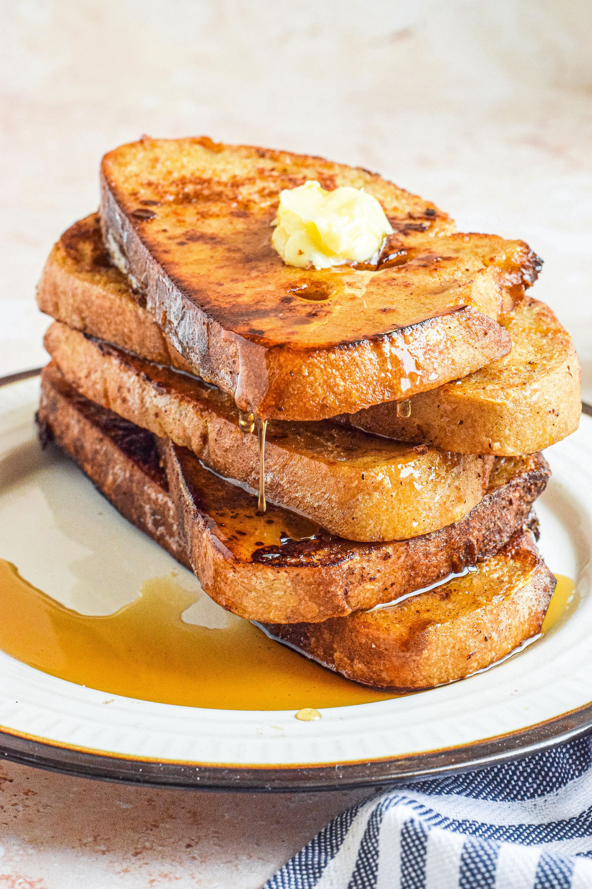

French Toast Recipes

The Best French Toast!
Fluffy and tender on the inside, gloriously browned on the outside.
Ingredients
- 4 large eggs
- 2/3 cup milk
- 2 teaspoons cinnamon
- 8 thick slices 2-day old bread
- Butter
- Maple syrup
Steps
-
Make the egg mixture: In a medium bowl, whisk together
the eggs, milk, and cinnamon. Stir in the orange zest and/or triple sec
if using. Whisk the mixture until well blended and pour into a shallow
bowl, wide enough to place a slice of the bread you will be using.
-
Soak the bread slices in egg mixture: Place each slice
of bread into the milk egg mixture, allowing the bread to soak in some
of it.
-
Fry the French toast:Melt some butter in a large
skillet over medium high heat. Shake off the excess egg mixture from the
bread and place the bread slices onto the hot skillet. Fry the French
toast until browned on one side, then flip and brown the other side.
-
Serve:Serve the French toast hot with butter, maple
syrup, and/or fresh berries.